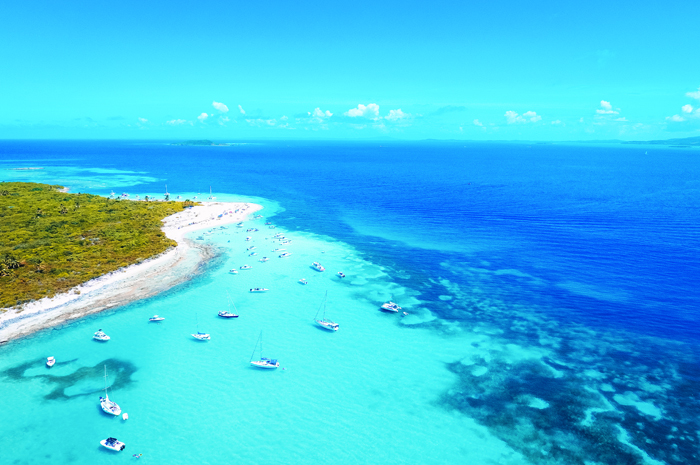
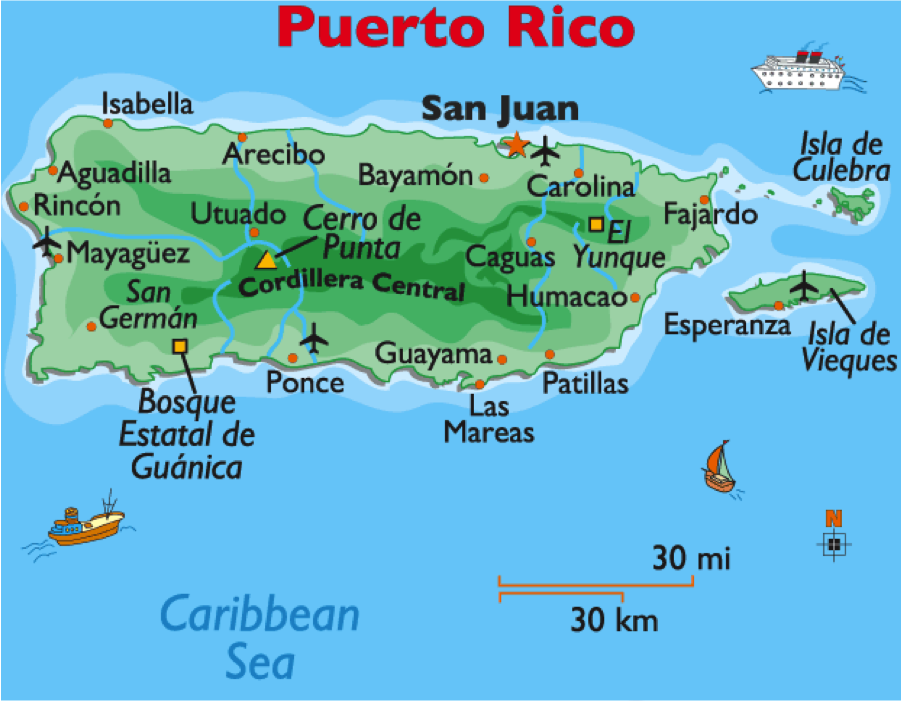
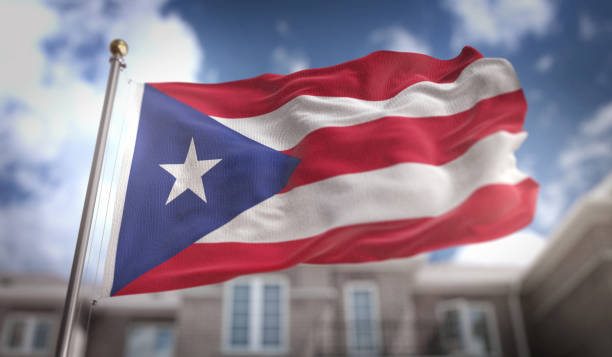
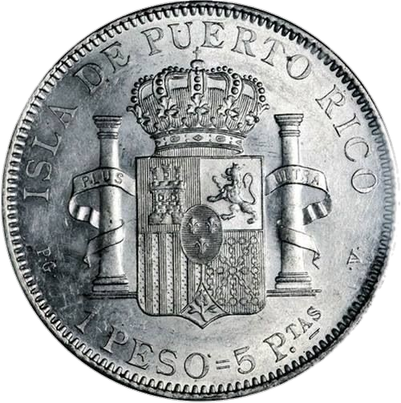
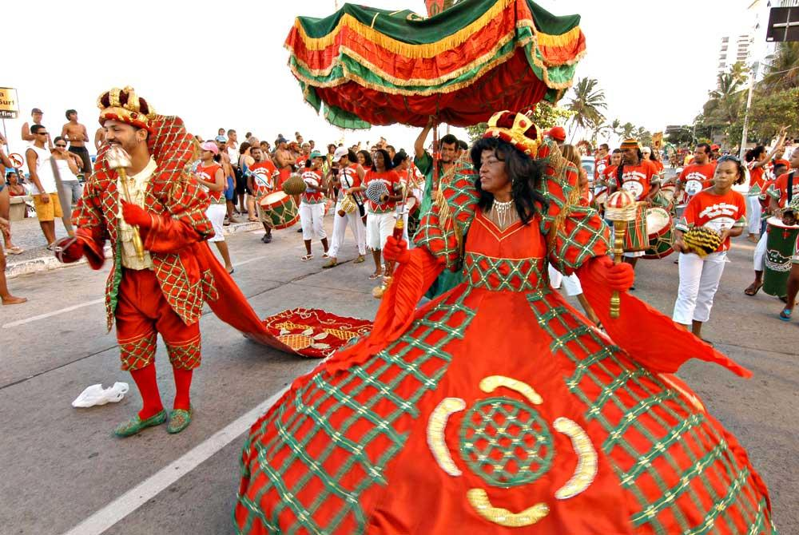
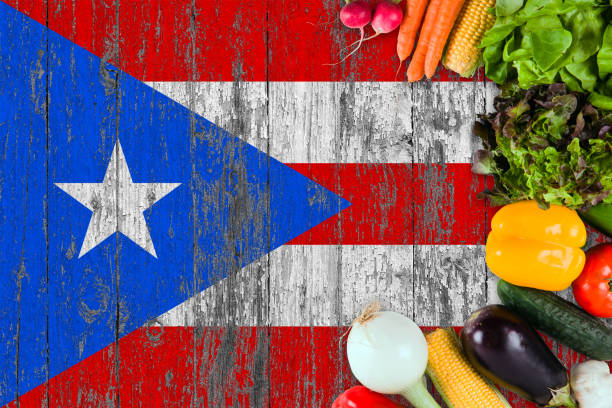
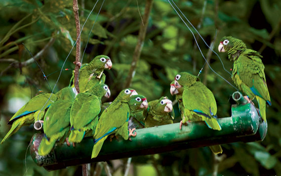

Puerto Rico was discovered by Christopher Columbus on his second voyage to the New World in 1493. Colonized by the Spanish, it became a crucial colony due to its strategic location in the Caribbean. The island was a site of numerous battles and became an important trading center for the Spanish. In 1898, after the Spanish-American War, Puerto Rico was ceded to the United States as part of the Treaty of Paris.
Puerto Rico is an island located in the Caribbean, east of the Dominican Republic and west of the British Virgin Islands. It is the smallest and most eastern of the Greater Antilles. The island is mountainous in the center, with the Central Mountain Range covered in tropical forests. The coast is dotted with white sandy beaches and turquoise-blue waters, as well as coral reefs.
Puerto Rico is an unincorporated territory of the United States. It has its own government with an elected governor and a bicameral legislature. However, Puerto Ricans do not have full representation in the US Congress and do not have the right to vote in US presidential elections, despite being American citizens.
Puerto Rico's economy is diverse, with sectors such as manufacturing (pharmaceuticals, electronics, chemicals), tourism, and financial services being major drivers. The official currency is the US dollar, and Puerto Rico is a duty-free zone for many American products.
Puerto Rican culture is rich and diverse, blending indigenous Taíno, African, Spanish, and American influences. Music is a cornerstone of the culture, with genres like salsa, merengue, and reggaeton originating from the island. Art, literature, and cuisine also reflect this mix of influences.
Puerto Rican cuisine is a blend of flavors and local ingredients, influenced by Spain, Africa, and Latin America. Popular dishes include mofongo (green plantain mash with garlic and meat), rice and beans, and seafood dishes such as shrimp and crabs.
The fauna of Puerto Rico is diverse, with species such as the coati (jupará), green iguanas, and a rich birdlife that includes the endemic Puerto Rican amazon parrot. Coastal waters are home to marine turtles and a variety of tropical fish.
Puerto Rican society is known for its hospitality and warmth, where family plays a central role in daily life. Religious festivities such as Christmas and Holy Week are celebrated with great devotion, reflecting the deep influence of religion on local culture. Additionally, music and dance festivals like the Ponce Carnival and the Bomba y Plena Festival are culturally significant events that enrich the island's social fabric.
Religion plays a vital role in the lives of Puerto Ricans, with the majority of the population adhering to Christianity, primarily Roman Catholicism. In addition to Catholics, there is a significant presence of Protestants and other Christian denominations on the island. The influence of Afro-Caribbean spiritual practices such as Santeria and Dominican Voodoo is also notable, contributing to the religious and cultural diversity of Puerto Rico. This rich tapestry of traditions and beliefs makes Puerto Rican society vibrant and multifaceted.
From December to April is considered the best time to visit Puerto Rico, as the weather is dry and temperatures are more pleasant, ranging from 24°C to 29°C.
Puerto Rico is in the Atlantic Standard Time (AST) zone, which is 4 hours behind Brasília Time (BRT).